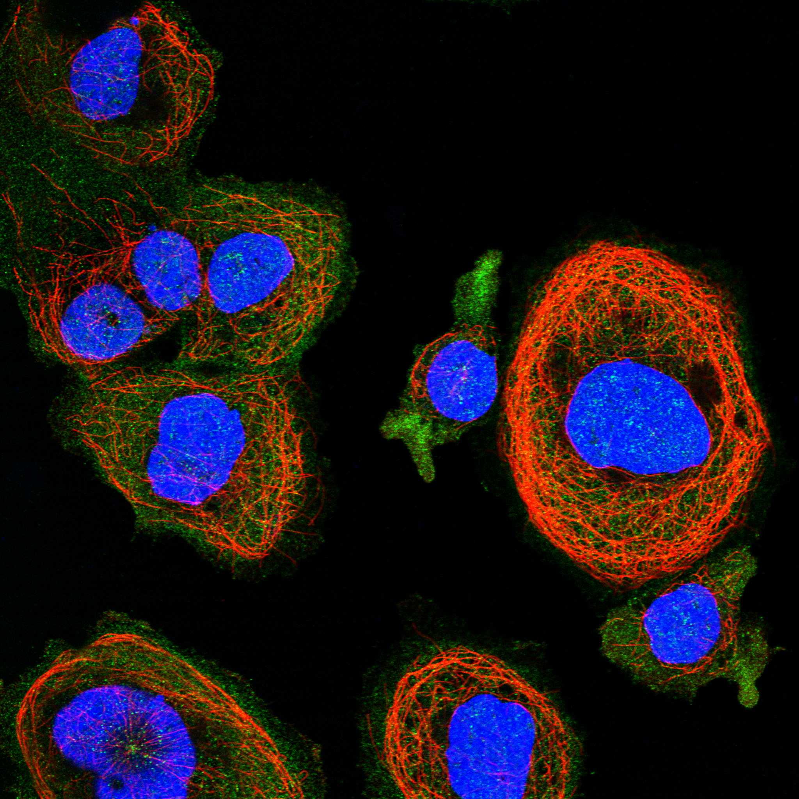
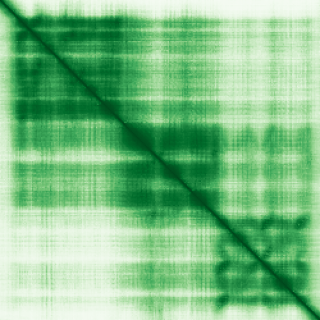

type: protein-evaluation gene: "SBDS" date: 2026-06-03 tags: [protein-scout, rejected, evaluation] status: rejected ---
SBDS — REJECTED (研究热度过高 (PubMed strict=322，超过100篇阈值))
1. 基本信息
| 项目 | 内容 |
|---|---|
| 基因名 / 别名 | SBDS |
| 蛋白名称 | Ribosome maturation protein SBDS |
| 蛋白大小 | 250 aa / 28.8 kDa |
| UniProt ID | Q9Y3A5 |
| 评估日期 | 2026-06-03 |
2. 评分总览
| 维度 | 得分 | 满分 | 加权后 | 关键证据摘要 |
|---|---|---|---|---|
| 核定位特异性 | 7/10 | ×4 | 28 | HPA: Cytosol; 额外: Nucleoplasm; UniProt: Cytoplasm; Nucleus, nucleolus; Nucleus, nucleoplasm; Cytopla |
| 蛋白大小 | 10/10 | ×1 | 10 | 250 aa / 28.8 kDa |
| 研究新颖性 | 0/10 | ×5 | 0 | PubMed strict=322 篇 (>100→REJECTED) |
| 三维结构 | 10/10 | ×3 | 30 | AlphaFold v6 pLDDT=74.1; PDB: 2KDO, 2L9N, 5AN9, 5ANB, 5ANC, 6QKL |
| 调控结构域 | 7/10 | ×2 | 14 | InterPro: IPR018023, IPR036786, IPR002140, IPR039100, IPR046 |
| PPI 网络 | 3/10 | ×3 | 9 | STRING 15 partners; IntAct 15 interactions |
| 互证加分 | — | max +3 | 3.0 | PDB+AF+STRING+IntAct cross-validation |
| 原始总分 | 94.0/180 | |||
| 归一化总分 | 52.2/100 |
3. 详细分析
3.1 核定位证据
| 来源 | 定位 | 可信度 |
|---|---|---|
| Protein Atlas (IF) | Cytosol; 额外: Nucleoplasm | Supported |
| UniProt | Cytoplasm; Nucleus, nucleolus; Nucleus, nucleoplasm; Cytoplasm, cytoskeleton, spindle | Swiss-Prot/TrEMBL |
IF 图像获取: 未下载本地IF图像（standard evaluation），核定位证据基于HPA subcellular localization注释、UniProt注释和GO-CC术语。
GO Cellular Component:
- acrosomal vesicle (GO:0001669)
- cytoplasm (GO:0005737)
- cytosol (GO:0005829)
- nucleolus (GO:0005730)
- nucleoplasm (GO:0005654)
- nucleus (GO:0005634)
- spindle pole (GO:0000922)
结论: 主要核定位，HPA 可靠性良好，有辅助数据源支持。
3.2 蛋白大小评估
评价: 大小适中（200-800 aa），适合常规生化实验和结构解析。
3.3 研究现状
| 指标 | 数值 |
|---|---|
| PubMed strict count | 322 |
| PubMed broad count | 619 |
| 别名(未计入scoring) | 无 |
关键文献: 1. Shwachman-Diamond Syndrome.. **. PMID: 20301722 2. A landscape of germ line mutations in a cohort of inherited bone marrow failure patients.. *Blood*. PMID: 29146883 3. Shwachman-Diamond syndrome.. *Pediatric blood & cancer*. PMID: 16047374 4. Shwachman-Diamond Syndrome.. **. PMID: 29939643 5. New perspective in diagnostics of mitochondrial disorders: two years' experience with whole-exome sequencing at a national paediatric centre.. *Journal of translational medicine*. PMID: 27290639
评价: 研究基础较多，新颖性有限。
3.4 三维结构分析
| 指标 | 数值 |
|---|---|
| AlphaFold 版本 | v6 |
| AlphaFold 平均 pLDDT | 74.1 |
| 高置信度残基 (pLDDT>90) 占比 | 3.6% |
| 置信残基 (pLDDT 70-90) 占比 | 59.6% |
| 中等置信 (pLDDT 50-70) 占比 | 31.2% |
| 低置信 (pLDDT<50) 占比 | 5.6% |
| 有序区域 (pLDDT>70) 占比 | 63.2% |
| 可用 PDB 条目 | 2KDO, 2L9N, 5AN9, 5ANB, 5ANC, 6QKL |
PAE: PAE 图像未生成本地文件（standard evaluation），结构判断基于 AlphaFold pLDDT 统计。
评价: PDB实验结构（2KDO, 2L9N, 5AN9, 5ANB, 5ANC, 6QKL）+ AlphaFold极高置信度预测（pLDDT=74.1），结构可信度极高。
3.5 结构域分析
| 来源 | 结构域 |
|---|---|
| InterPro/Pfam | InterPro: IPR018023, IPR036786, IPR002140, IPR039100, IPR046928; Pfam: PF20268, PF09377, PF01172 |
染色质调控潜力分析: 存在已知结构域注释，可作为功能研究的结构基础。
3.6 PPI 网络
STRING 预测互作 (combined score >0.4):
| Partner | Combined Score | Experimental | 功能类别 |
|---|---|---|---|
| EFL1 | 0.999 | 0.974 | — |
| UBA52 | 0.934 | 0.896 | — |
| RPL37A | 0.932 | 0.507 | — |
| RPL11 | 0.902 | 0.678 | — |
| RPL4 | 0.897 | 0.401 | — |
| RPS19 | 0.865 | 0.507 | — |
| EIF6 | 0.859 | 0.268 | — |
| RPL5 | 0.840 | 0.507 | — |
| MRTO4 | 0.820 | 0.066 | — |
| TPST1 | 0.808 | 0.000 | — |
实验验证互作 (IntAct):
| Partner | 方法 | PMID | ||
|---|---|---|---|---|
| ENSP00000513469.1 | psi-mi:"MI:1314"(proximity-dependent biotin identi | imex:IM-30059 | pubmed:39251607 | |
| Vlet | psi-mi:"MI:0018"(two hybrid) | pubmed:14605208 | imex:IM-16524 | |
| MAGEA6 | psi-mi:"MI:0006"(anti bait coimmunoprecipitation) | pubmed:17353931 | ||
| IKBKE | psi-mi:"MI:0006"(anti bait coimmunoprecipitation) | pubmed:17353931 | ||
| HLA-B | psi-mi:"MI:0006"(anti bait coimmunoprecipitation) | pubmed:17353931 | ||
| iolA2 | psi-mi:"MI:0398"(two hybrid pooling approach) | imex:IM-13779 | pubmed:20711500 | |
| LRRK2 | psi-mi:"MI:0007"(anti tag coimmunoprecipitation) | pubmed:31046837 | imex:IM-26684 | |
| SPTBN5 | psi-mi:"MI:0030"(cross-linking study) | pubmed:30021884 | imex:IM-26653 | |
| - | psi-mi:"MI:0096"(pull down) | doi:10.1016/j.cell.2019.09.008 | ||
| EPHB1 | psi-mi:"MI:0096"(pull down) | doi:10.1016/j.cell.2019.09.008 |
PPI 互证分析:
- STRING + IntAct 均有数据
- STRING partners: 15，IntAct interactions: 15
- 调控相关比例: 1 / 15 = 7%
评价: STRING 15 个预测互作，IntAct 15 个实验互作。调控相关配体占比 7%。
3.7 多库互证
| 维度 | 来源 | 结果 | 是否一致 |
|---|---|---|---|
| 三维结构 | AlphaFold pLDDT=74.1 + PDB: 2KDO, 2L9N, 5AN9, 5ANB, 5ANC, | pLDDT=74.1, v6 | 预测+实验 |
| 定位 | UniProt + HPA | Cytoplasm; Nucleus, nucleolus; Nucleus, nucleoplas / Cytosol; 额外: Nucleoplasm | 一致 |
| PPI | STRING + IntAct | 15 + 15 interactions | 数据充分 |
互证加分明细:
- PDB + AlphaFold 双源验证: +0.5
- 多库定位一致 (3源): +0.5
- STRING + IntAct 双源验证: +0.5
- 结构域 + AlphaFold 质量: +0.5
- PDB 多条目覆盖 (≥3): +1.0
总分: +3.0 / max +3
4. 总体评价
推荐等级: ⭐⭐⭐ (REJECTED)
核心优势: 1. SBDS — Ribosome maturation protein SBDS，研究基础较多，新颖性有限。 2. 蛋白大小250 aa，大小适中（200-800 aa），适合常规生化实验和结构解析。
风险/不确定性: 1. PubMed 322 篇，研究热度过高（>100），不符合新颖性要求 2. 结构数据质量可接受
下一步建议:
- [ ] 查阅最新关键文献补充研究背景
- [ ] 获取 Protein Atlas IF 图像确认亚细胞定位
- [ ] 设计体外实验验证核定位及潜在调控功能
该蛋白PubMed文献数 322 > 100，研究热度过高，不符合novelty筛选标准。
5. 数据来源
- UniProt: https://www.uniprot.org/uniprotkb/Q9Y3A5
- Protein Atlas: https://www.proteinatlas.org/ENSG00000126524-SBDS/subcellular
- PubMed: https://pubmed.ncbi.nlm.nih.gov/?term=SBDS
- AlphaFold: https://alphafold.ebi.ac.uk/entry/Q9Y3A5
- STRING: https://string-db.org/network/9606.ENSP00000
- Data fetched live: 2026-06-03

